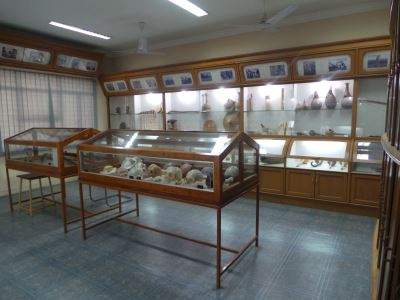
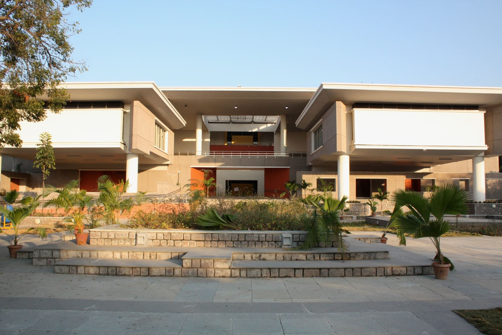

Background & Rationale
Anthropology today engages directly with health inequities,
educational transformation, environmental risk, digital life, urban change, and heritage futures.
Bringing scholars, practitioners, policymakers, and communities into one forum enables problem-focused,
context-sensitive knowledge that can inform policy and practice while strengthening university–society linkages.
This concept note is derived from the final public note issued by the organising team.
University of Hyderabad
The University of Hyderabad (UoH) is a prestigious public central research university
established in 1974 by an Act of Parliament as part of the Six-Point Formula to address
regional educational disparities. Located in Gachibowli, Hyderabad, Telangana, this
residential campus spans 2,300 acres and hosts over 5,000 students and 400 faculty members
across various disciplines. The university began its journey at 'The Golden Threshold,'
a historic Indo-European architectural estate bequeathed by Sarojini Naidu's family,
before moving to its current sprawling campus. UoH is widely recognized for its excellence
in research and distinguished faculty, offering close to 120 different programs through
40+ departments and centers organized in 12 schools of study.
School of Social Sciences
The School of Social Sciences at the University of Hyderabad houses several distinguished
departments, with the Departments of Political Science and Sociology receiving recognition
from the University Grants Commission for the Special Assistance Programme. The school
features specialized facilities including an Archival Cell supported by the UGC under
the Department of History for preserving rare manuscripts, and all departments are equipped
with modern email and internet facilities. Beginning in 2007-2008, the school launched
a Five Year Integrated Programme in Social Sciences leading to a master's degree.
Department of Anthropology

The Department of Anthropology within the School of Social Sciences has developed a museum
as a teaching aid for students, demonstrating its commitment to practical learning approaches.
The department maintains excellent facilities including separate air-conditioned classrooms
for M.A. and research students, equipped with speakers, projectors for presentations,
documentaries, and electronic whiteboards. The department offers expertise across various
specializations including Social Anthropology, Medical Anthropology, Applied Anthropology,
Kinship Studies, Theories of Culture, and Educational Anthropology, reflecting its
comprehensive approach to anthropological education and research.
Venue

The seminar will be held at the main Seminar Hall at the University of Hyderabad.
September 26-27, 2025 at Zakir Husain Hall, University of Hyderabad